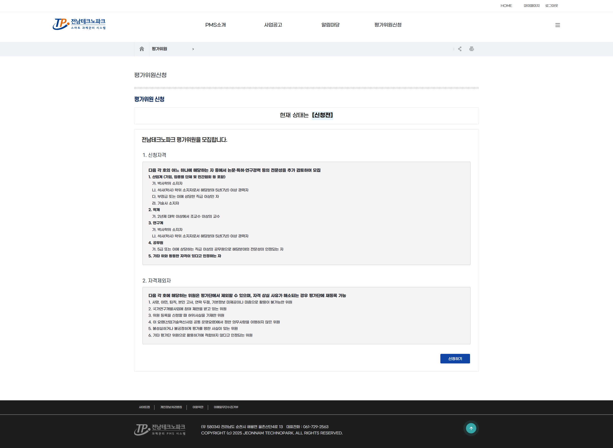
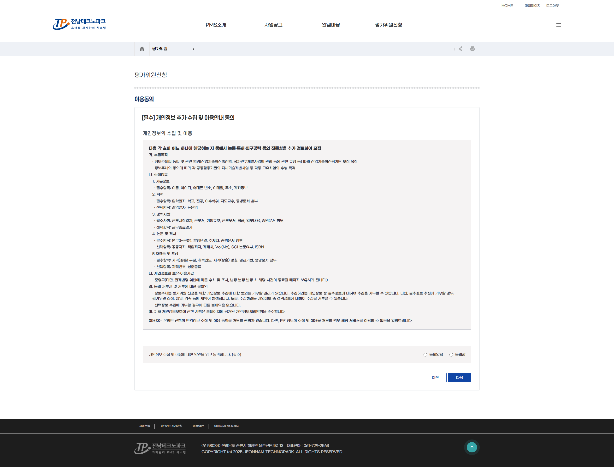
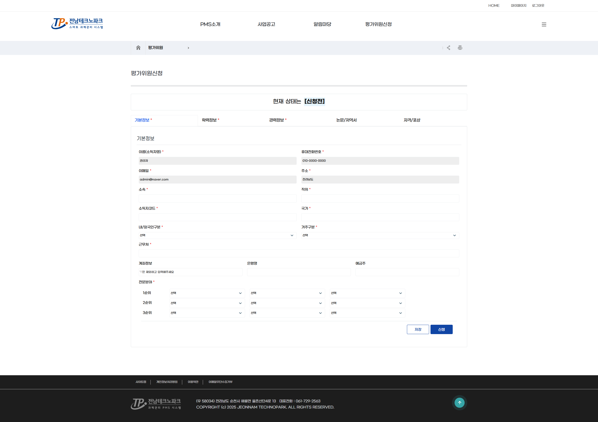
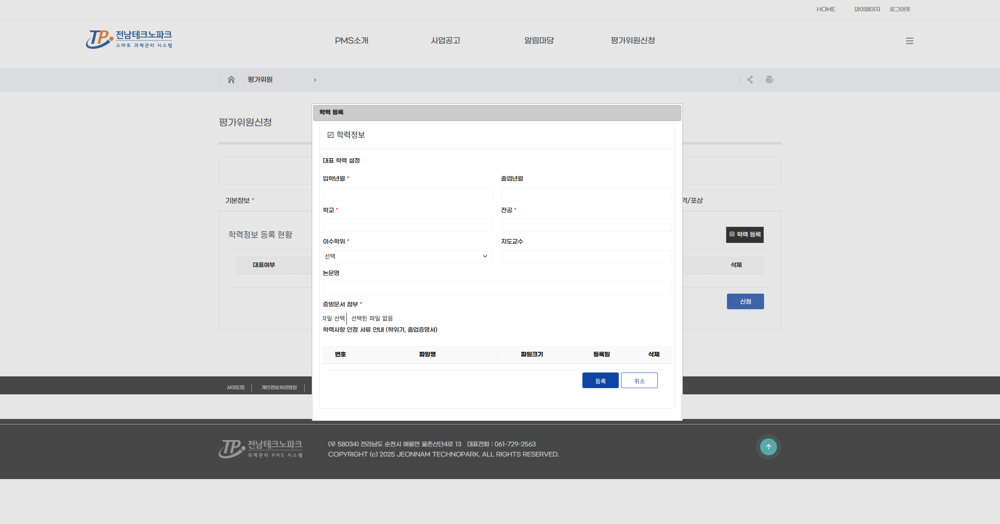
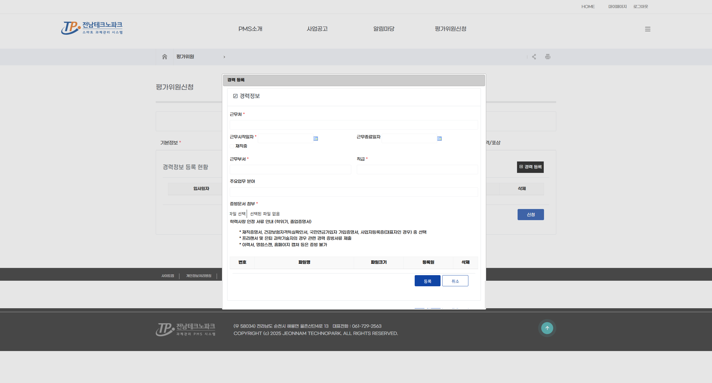
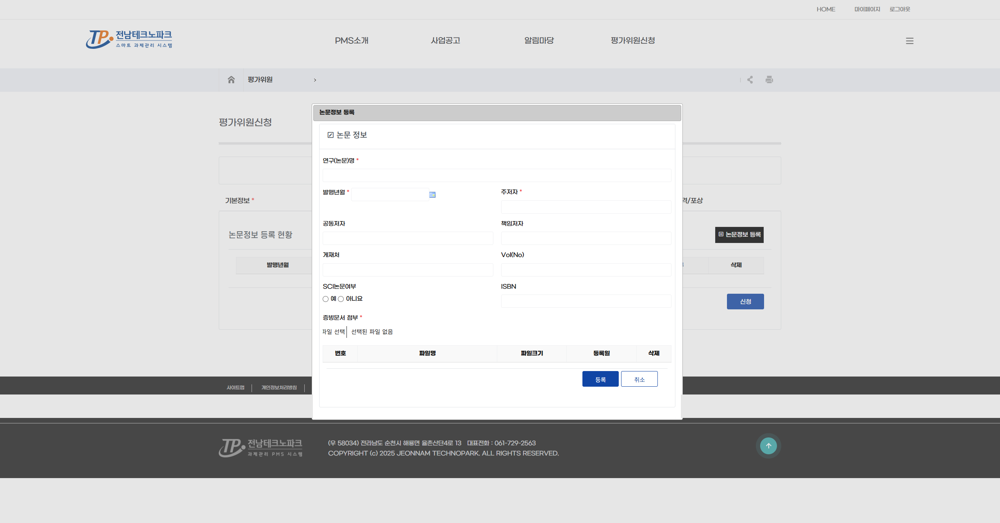
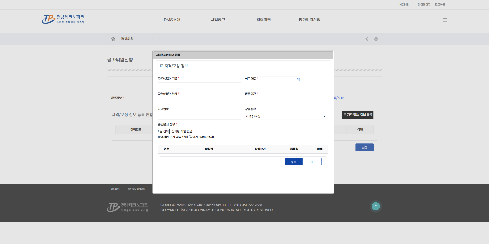

평가위원 신청 평가위원
⚠️ 사전 준비
평가위원 신청은 회원가입 후 로그인한 상태에서만 가능합니다.아직 계정이 없는 경우 먼저 일반회원 가입을 완료하고 로그인하세요.
1. 안내사항 확인
로그인 후 상단 메뉴 「평가위원신청」 클릭 → 평가위원 신청 안내사항을 확인하고 「신청하기」 클릭

2. 이용동의
개인정보 수집·이용 동의 내용을 확인하고 동의 후 「다음」 클릭

3. 기본정보 입력
성명·생년월일·연락처·소속기관·직위 등 기본 정보를 입력하고 「저장 후 다음」 클릭

⚠️ 주의
★ 표시 항목은 필수입니다. 정확하게 입력해야 향후 평가 배정 및 수당 지급에 문제가 없습니다.
4. 학력정보 입력
「학력 등록」 클릭 → 학교명·전공·학위·졸업연도를 입력하고 「등록 후 다음」 클릭

5. 경력정보 입력
「경력 등록」 클릭 → 기관명·직위·재직기간을 입력하고 「등록 후 다음」 클릭

6. 논문 / 저역서 입력
「논문정보 등록」 클릭 → 논문명·게재지·발행연도 또는 저역서명·출판사·출판연도를 입력하고 「등록 후 다음」 클릭

7. 자격 / 포상 입력 및 신청 완료
보유 자격증·수상 이력을 입력하고 「신청」 클릭

💡 안내
신청 완료 후 관리자 검토를 거쳐 평가위원으로 등록됩니다.
추후 관리자 승인 후 평가위원 정보 수정 시 임시저장 상태로 변경되며, 승인 이전까지 평가가 불가능합니다.